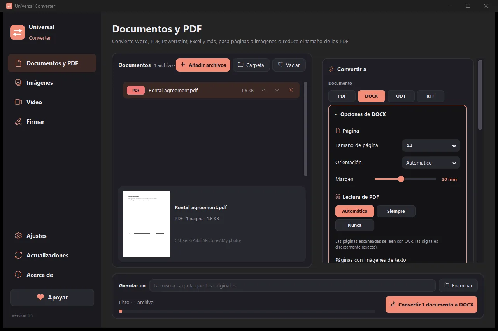

Comprimir un PDF al tamaño que elijas
Añade el PDF y escribe el tamaño máximo que puede tener. Universal Converter reduce poco a poco las imágenes del interior hasta que el archivo cabe y conserva la versión que mejor se ve. El texto y los dibujos siguen nítidos y el archivo original queda como estaba.
Cómo instalar y actualizar
- Abre el .dmg descargado y arrastra Universal Converter a Aplicaciones.
- Abre la app. La primera vez macOS la bloquea porque no está firmada por Apple: pulsa OK.
- Abre Ajustes del Sistema > Privacidad y seguridad, desplázate hacia abajo, pulsa «Abrir igualmente» e introduce tu contraseña. Solo se hace una vez.
Actualizaciones: si lo permites al abrirla por primera vez, la app busca versiones nuevas cada vez que se inicia, comprueba su firma digital y las instala cuando tú elijas.
Cómo instalar y actualizar
- Pulsa «Descargar para Android» en tu teléfono.
- Abre el archivo descargado. Si Android lo pide, permite que tu navegador o gestor de archivos instale apps.
- Pulsa Instalar.
Actualizaciones: la app comprueba aproximadamente una vez al día y le avisa cuando hay una versión nueva. Descárguela del mismo modo e instálela sobre la anterior; sus ajustes se conservan.
Cómo instalar y actualizar
- Descargue el archivo .AppImage.
- Hágalo ejecutable: clic derecho, Propiedades > Permisos y permita ejecutarlo como programa (o en una terminal: chmod +x Universal-Converter-*.AppImage).
- Haga doble clic. No se instala nada: la aplicación es este único archivo.
Actualizaciones: si lo permite la primera vez que se abre, busca versiones nuevas cada vez que se inicia, verifica su firma digital y sustituye el archivo AppImage donde está.
Cómo hacerlo
- Abre Universal Converter y elige Documentos y PDF a la izquierda.
- Arrastra tus archivos o una carpeta entera a la ventana, o pulsa Añadir archivos.
- Elige PDF en Convertir a, activa Comprimir PDF e indica el tamaño objetivo en KB o MB.
- Pulsa Convertir. Los archivos nuevos se guardan junto a los originales o en la carpeta que elijas.

¿Por qué sin conexión?
Universal Converter hace el trabajo en tu propio dispositivo. Tus archivos siguen siendo privados, los archivos grandes no son problema y funciona sin conexión a internet.
Más cosas que puede hacer
- Convertir un PDF a Word
- Convertir documentos de Word a PDF
- Unir varios archivos en un PDF
- Comprimir un PDF a 100 KB, 200 KB o el tamaño que pida un formulario
- Convertir páginas de PDF a imágenes JPG
- Convertir un documento escaneado en un Word editable
- Convertir imágenes entre JPG, PNG, WEBP y más
- Cambiar el tamaño de imágenes o reducirlas a un tamaño de archivo
- Cambiar el tamaño de una foto o firma a 20 KB, 50 KB o píxeles exactos
- Unir fotos en un solo PDF
- JPG a PDF de menos de 100 KB
- Copiar el texto de una imagen (OCR)
- Comprimir un vídeo sin subirlo
- Convertir vídeos entre MP4, MKV, WebM, MOV y AVI
- Guardar el sonido de un vídeo en MP3
- Crear un GIF a partir de un vídeo
- Pasar tablas de un PDF a Excel
- Convertir un extracto bancario en PDF a Excel
- Extraer tablas de facturas en PDF a Excel
- Firmar un PDF
- Rellenar un formulario PDF